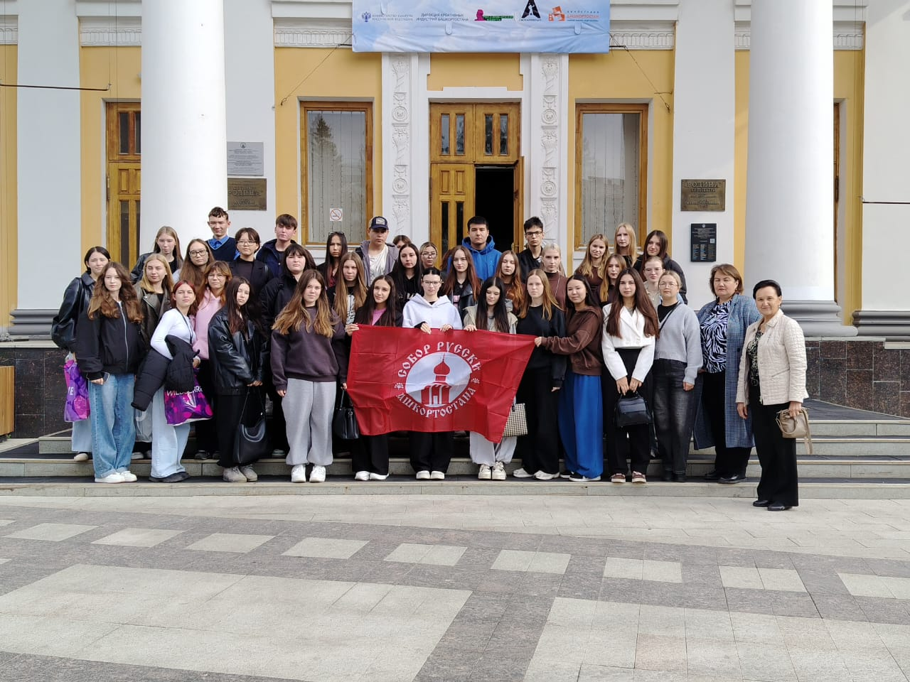
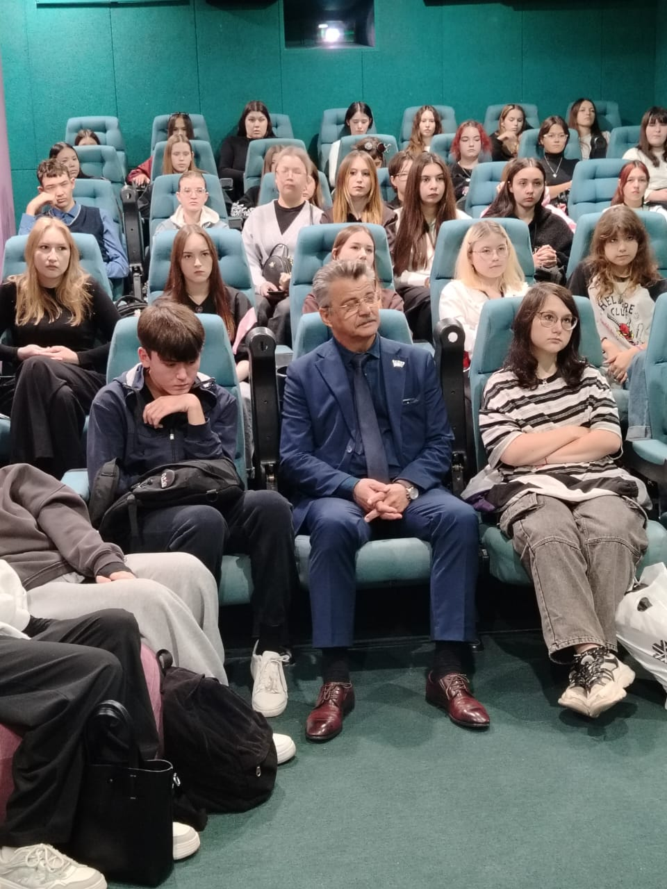
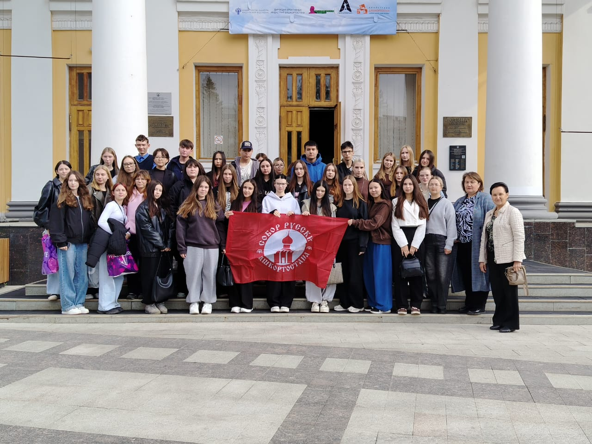
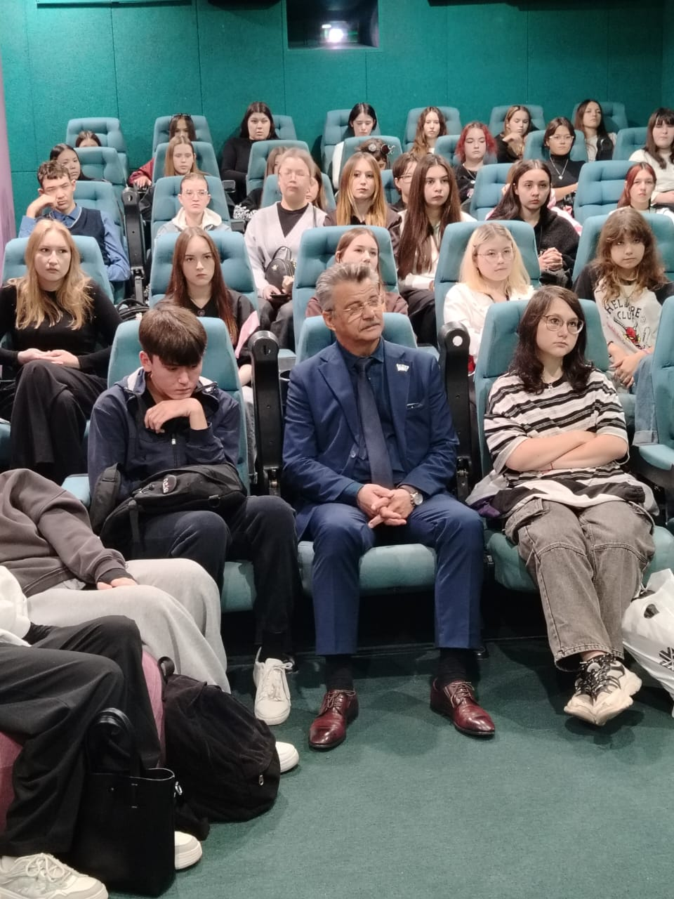

В зеленом зале кинотеатра «Родина» поприглашению РОО «Собор русских Башкортостана». Здесь общественная организацияпровела очередной урок мужества.Ис полнительный директор РОО «Собор русскихБашкортостана» Павел Васильев пояснил, почему ребят пригласили именно сюда,ведь кинотеатр «Родина» - старейший в республике, его навернякапосещали их родители, и фильм, который предложен для просмотра, также неслучаен.Кинока ртина «Девятаев» повествует о подвигесоветского летчика во время Великой Отечественной войны, который попав в плен кнемцам, смог выжить в концлагере и совершить уникальный побег, угнав немецкийбомбардировщик.Павел Юрь евич поделился воспоминаниями, как их,пятиклассников, повезли на экскурсию, показать места сражений.- Я вырос в Мурманской области, где буквальносовсем недалеко на сопках шли ожесточенные бои. Это место называли «Долинойславы». Особенно врезалась в памяти картина штыка, качавшегося на ветру. Ещеподростком я ощутил дыхание войны и этой трагедии, что осталось со мной на всюжизнь. Вы должны знать, что вся история страны соткана из подвигов нашихпрадедов. И сейчас она продолжается. Только сейчас уже нашу территориюотстаивают ваши отцы. Многие прошли этот ад и вернулись героями. Мы должныгордиться ими, их сегодняшним подвигом.Подробно об истор ии создания фильма, основанногона реальных событиях, рассказала Заслуженный работник культуры РеспубликиБашкортостан, почетный кинематографист России, член Союза кинематографистовУтяшева Рида Шарифьяновна, пожелав приятного просмотра.После показа ребята были под впечатлением:- Очень понравился ф ильм, признаться, я зналтолько об Алексее Маресьеве и Николае Гастелло, сейчас даже задумался: смог быя так, - поделился первокурсник Булат Саяхов.- А мне понравилось, к ак говорил Павел Юрьевич, -очень понятно, без нравоучений, - призналась третьекурсница Женя Абдуллина. -Еще он сказал, что надо прислушиваться к родителям и ценить их, ведь они старшеи мудрее. Обязательно скажу папе с мамой, чтобы посмотрели этот фильм.Работа с молодежью по пат риотическому воспитанию,формирование активной гражданской позиции – одно из основных направленийдеятельности РОО «Собор русских Башкортостана». Ребят ждут новые встречи,рассказы о героическом прошлом и настоящем нашей страны.
 


